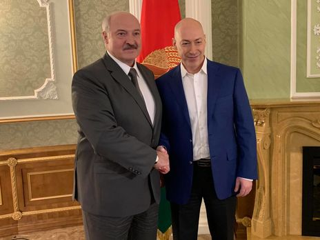
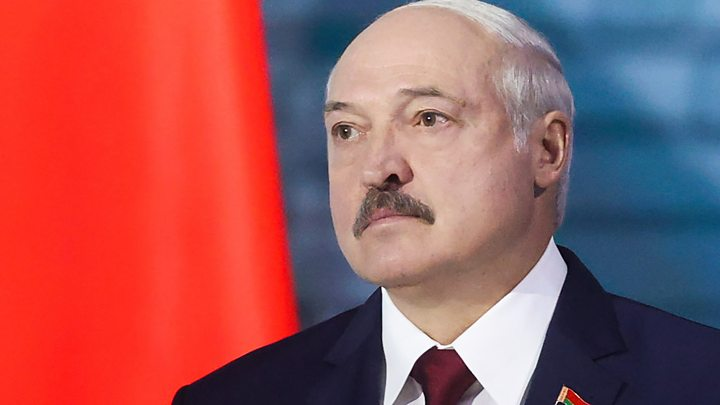
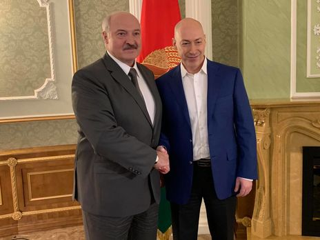
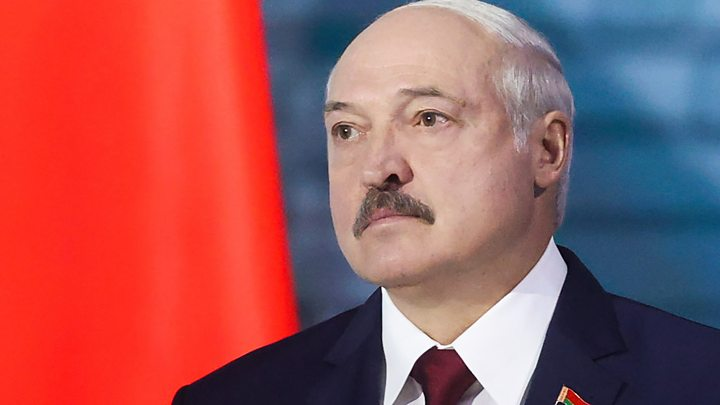

Интервью Дмитрия Гордона с президентом республики Беларусь Александром Лукашенко. 2020 год
00:00 об Александре Лукашенко
01:03 о своем детстве, отце и матери
04:47 о том, за что стоял на учете в детской комнате милиции
07:25 о том, атеист он или верующий
09:32 о том, почему голосовал против ратификации Беловежских соглашений в Верховном Совете СССР
10:32 «Я был одним из тех, кто загубил программу Явлинского «500 дней»
12:57 о том, какие у него были отношения с Ельциным
14:27 о том, мог ли Ельцин поступить по отношению к Украине и Беларуси так, как Путин
19:46 о том, почему Ельцин выбрал в преемники Путина и о том, жалел ли потом о своем выборе
22:15 о том, как познакомился с Путиным и чем Путин образца 1999-го года отличается от Путина образца 2020
 Дми́трий Ильи́ч Гордо́н (укр. Дмитро Ілліч Гордон; род. 21 октября 1967, Киев, Украинская ССР, СССР) —
украинский журналист, ведущий программы «В гостях у Дмитрия Гордона» (с 1996 года), главный редактор газеты
«Бульвар Гордона» (1995—2019), основатель интернет-издания «ГОРДОН»[uk]*, обладатель двух «Золотых кнопок
YouTube»[1] за превышающее миллион количество подписчиков на его YouTube-каналах «Дмитрий Гордон» и «В
гостях у Гордона», депутат Киевского городского совета (2014—2016).

1:38:36 о прозвище Батька и о том, почему его называют последним диктатором Европы
1:40:47 о свободе слова в Беларуси
1:42:39 о причинах тюремного заключении своих конкурентов на выборах
1:45:28 о том, хочет ли Россия, чтобы он снова стал президентом Беларуси
1:46:28 о Тихановской, Бабарико и Цепкало
1:56:19 о том выдадут ли «вагнеровцев» Украине
1:58:02 о том, есть ли у него мандраж перед выборами
1:58:46 «Меня могут застрелить, но я никуда не убегу»
2:01:38 о том, кто станет президентом Беларуси

Алекса́ндр Григо́рьевич Лукаше́нко (белор. Аляксандр Рыгоравіч Лукашэнка; род. 30 августа 1954, п. Копысь,
Оршанский район, Витебская область, Белорусская ССР, СССР) — белорусский политический и государственный
деятель. Действующий президент и главнокомандующий Вооружёнными силами Республики Беларусь с 20 июля 1994
года.
Дми́трий Ильи́ч Гордо́н (укр. Дмитро Ілліч Гордон; род. 21 октября 1967, Киев, Украинская ССР, СССР) —
украинский журналист, ведущий программы «В гостях у Дмитрия Гордона» (с 1996 года), главный редактор газеты
«Бульвар Гордона» (1995—2019), основатель интернет-издания «ГОРДОН»[uk]*, обладатель двух «Золотых кнопок
YouTube»[1] за превышающее миллион количество подписчиков на его YouTube-каналах «Дмитрий Гордон» и «В
гостях у Гордона», депутат Киевского городского совета (2014—2016).

1:38:36 о прозвище Батька и о том, почему его называют последним диктатором Европы
1:40:47 о свободе слова в Беларуси
1:42:39 о причинах тюремного заключении своих конкурентов на выборах
1:45:28 о том, хочет ли Россия, чтобы он снова стал президентом Беларуси
1:46:28 о Тихановской, Бабарико и Цепкало
1:56:19 о том выдадут ли «вагнеровцев» Украине
1:58:02 о том, есть ли у него мандраж перед выборами
1:58:46 «Меня могут застрелить, но я никуда не убегу»
2:01:38 о том, кто станет президентом Беларуси

Алекса́ндр Григо́рьевич Лукаше́нко (белор. Аляксандр Рыгоравіч Лукашэнка; род. 30 августа 1954, п. Копысь,
Оршанский район, Витебская область, Белорусская ССР, СССР) — белорусский политический и государственный
деятель. Действующий президент и главнокомандующий Вооружёнными силами Республики Беларусь с 20 июля 1994
года.
Прямая речь: "Нам пытаются эту заварушку подкинуть. Я предупреждал: майдана не будет, как бы кому-то этого ни
хотелось. Поэтому надо утихомириться, успокоиться. А родителям третий раз говорю посмотреть, где их чадо, чтобы
не было потом больно. Ранены где-то около 25 ребят из ОМОНа. Есть переломы рук, ног. Специально, целенаправленно
били по этим ребятам. Они ответили. Чего теперь рыдать и плакать? Поэтому ответ будет адекватный…